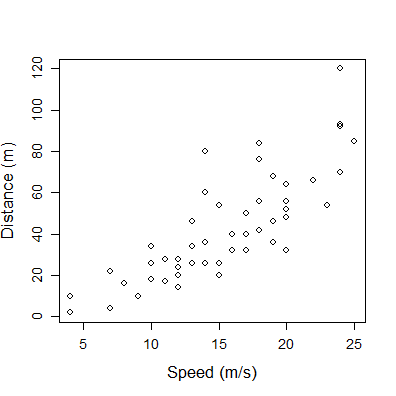
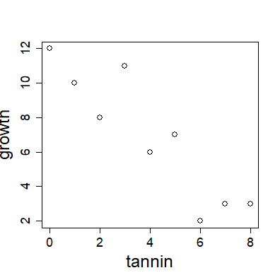

BL6024 - Quantitative Skills for Biologists using R
Lecture 4: Linear regression
Topics covered today
- Choosing the right kind of statistical analysis
- Theory of linear regression
Choosing the right kind of statistical analysis
One of hardest parts of statistical modelling is getting started, i.e. choosing the right kind of statistical analysis
Choice depends on nature of your data and the particular question(s) you are trying to answer
Essential to answer the following:
- Which of your variables is your response variable?
- Which are the explanatory variables?
- Are the explanatory variables continuous, or categorical, or a mixture of both?
- What kind of response variable do you have: continuous, count, proportion, a time at death, or a category?
Type of test depends on nature of explanatory and response variables

Theory of linear regression
- Regression analysis is the statistical method you use when both the response variable and the explanatory variable are continuous (i.e. real numbers with decimal places - things like heights, weights, volumes, or temperatures). 
Theory of linear regression
Linear regression comes in different flavours:
linear regression(the simplest, and much the most frequently used);polynomial regression(often used to test for non-linearity in a relationship);piecewise regression(two or more adjacent straight lines);robust regression(models that are less sensitive to outliers);multiple regression(where there are numerous explanatory variables);non-linear regression(to fit a specified non-linear model to data);non-parametric regression(used when there is no obvious functional form).
Theory of linear regression
The essence of regression analysis is using sample data to estimate parameter values and their standard errors.
Theory of linear regression
The essence of regression analysis is using sample data to estimate parameter values and their standard errors.
First, however, we need to select a model which describes the relationship between the response variable and the explanatory variable(s).
The simplest of all is the linear model:
\[y = a + bx\]
There are 2 variables (\(y\) and \(x\)) and 2 paramaters (\(a\) and \(b\))
The intercept is \(a\) (the value of \(y\) when \(x\)=0)
The slope is \(b\) (the change in \(y\) divided by the change in \(x\) which brought it about)
Theory of linear regression
Let's start with an example which shows the growth of caterpillars fed on experimental diets differing in their tannin content (see Chapter 10 of Crawley 2007 The R Book):
reg.data<-read.table("datasets\\regression.txt",header=T)
str(reg.data)
## 'data.frame': 9 obs. of 2 variables:
## $ growth: int 12 10 8 11 6 7 2 3 3
## $ tannin: int 0 1 2 3 4 5 6 7 8
names(reg.data)
## [1] "growth" "tannin"
Theory of linear regression
with(reg.data,
plot(tannin,growth,pch=1,
cex.lab=2, cex.axis=1.5, cex=1.5))

The higher the percentage of tannin in the diet, the more slowly the caterpillars grew.
One can get a crude estimate of the parameter values by eye.
Slope looks like around -10/8= -1.25
Intercept looks like around 12.
So: \[y \approx 12.0 -1.25x\]
Theory of linear regression
But what we want is an objective method of computing parameter estimates from the data that are in some sense the 'best' estimates of the parameters for these data and this particular model.
- Convention in modern statistics is to use the maximum likelihood (ML) estimates of the parameters as providing the 'best' estimates. That is:
Given the data, and having selected a linear model, we want to find the values of the slope and intercept that make the data most likely
The method of least squares gives the ML estimates, under the following set of assumptions:
Theory of linear regression
- The variance in \(y\) is constant (i.e. the spread does not change as \(y\) gets bigger).
- The explanatory variable, \(x\), is measured without error.
- The difference between a measured value of \(y\) and the value predicted by the model for the same value of \(x\) is called a residual.
- Residuals are measured on the scale of \(y\) (i.e. parallel to the \(y\) axis).
- The residuals are normally distributed.
\[d = y -\hat{y}\] \[d = y -(a+bx) = y - a - bx\]
The famous sum of squares
The sum of the squares of these distances (i.e. residuals) provides a measure of lack of fit \[\sum{d^{2}} = \sum{({y-\hat {y}})^2}\]
\[ = \sum{(y-a-bx)^2}\]
The famous sum of squares
The best fit line is defined as passing through the point defined by the mean value of \(x\) and the mean value of \(y\), i.e. \((\bar x, \bar y)\).
- Imagine pivoting the line around this mean: what would happen to the sum of squares?
The famous sum of squares
The best fit line is defined as passing through the point defined by the mean value of \(x\) and the mean value of \(y\), i.e. \((\bar x, \bar y)\).
- Imagine pivoting the line around this mean: what would happen to the sum of squares?
The famous sum of squares
The best fit line is defined as passing through the point defined by the mean value of \(x\) and the mean value of \(y\), i.e. \((\bar x, \bar y)\).

- Imagine pivoting the line around this mean: what would happen to the sum of squares?
The famous sum of squares
The best fit line is defined as passing through the point defined by the mean value of \(x\) and the mean value of \(y\), i.e. \((\bar x, \bar y)\).
- Imagine pivoting the line around this mean: what would happen to the sum of squares?
The famous sum of squares
The best fit line is defined as passing through the point defined by the mean value of \(x\) and the mean value of \(y\), i.e. \((\bar x, \bar y)\).

- Imagine pivoting the line around this mean: what would happen to the sum of squares?

- The ML estimate of the slope is the value of b associated with the minimum value of the sum of the squares of the residuals
The famous sum of squares
With these three quantities...
... we can easily calculate the ML esimate of the parameters and their standard errors.
The famous sum of squares
With these three quantities...
... we can easily calculate the ML esimate of the parameters and their standard errors.
The ML estimate of the slope is just:

The famous sum of squares
With these three quantities...
... we can easily calculate the ML esimate of the parameters and their standard errors.
The ML estimate of the slope is just:
- One part of the definition of the best-fit straight line is that it passes through the the mean values of \(x\) and \(y\). Since we know that \(y = a + bx\), it must be the case that: \[\bar{y} = a + b\bar{x}\] and so the ML estimate of the intercept is simply: \[ a = \bar{y} - b\bar{x}\]
The famous sum of squares
With these three quantities...
... we can easily calculate the ML esimate of the parameters and their standard errors.
The ML estimate of the slope is just:
- One part of the definition of the best-fit straight line is that it passes through the the mean values of x and y. Since we know that y = a + bx, it must be the case that:
\[\bar{y} = a + b\bar{x}\]
and so the ML estimate of the intercept is simply:
\[ a = \bar{y} - b\bar{x}\]
And the standard errors:

Linear regression in R
The function for carrying out linear regression in R is lm (which stands for 'linear model').
lm(growth ~ tannin, data=reg.data)
##
## Call:
## lm(formula = growth ~ tannin, data = reg.data)
##
## Coefficients:
## (Intercept) tannin
## 11.756 -1.217
We can now write the maximum likelihood equation like this: \[growth = 11.756 - 1.217 \times tannin\]
Degree of scatter
There is another very important issue that needs to be considered, because two data sets with exactly the same slope and intercept could look quite different:

Degree of scatter
There is another very important issue that needs to be considered, because two data sets with exactly the same slope and intercept could look quite different:
We need a way to quantify the degree of scatter, so that the graph on the left has a high value and the graph on the right has a low value. We can use our sum of squares of the residuals! Also known as the error sum of squares, SSE.
The coefficient of determination
By tradition, however, when talking about the degree of scatter we actually quantify the lack of scatter
Here we use the coefficient of determination, more commonly known simply as 'r squared':
r2 = the fraction of the total variation in y that is explained by variation in x
\[ r^{2}=\frac{SSY-SSE}{SSY} \]

The coefficient of determination
- In R, a null model can be fitted in which growth is described by an intercept only.
# This gives SSY. Note than in R, the intercept is called parameter 1:
deviance(lm(growth~1, data=reg.data))
## [1] 108.8889
- The value of SSE can be extracted very simply from the regression model:
deviance(lm(growth~tannin, data=reg.data))
## [1] 20.07222
\[ r^2 = \frac {108.8889 - 20.07222}{108.8889} = 0.8156633 \]
The coefficient of determination
- But of course, the value of r2 can be extracted directly from the model:
#Note the use of [[8]] to subset the output of a list:
summary(lm(growth~tannin, data=reg.data))[[8]]
## [1] 0.8156633
The coefficient of determination
- But of course, the value of r2 can be extracted directly from the model:
#Note the use of [[8]] to subset the output of a list:
summary(lm(growth~tannin, data=reg.data))[[8]]
## [1] 0.8156633
- The correlation coefficient, r, is given by: \[ r = \frac {SSXY}{\sqrt {SSX \times SSY}} = \frac {cov(x,y)}{\sqrt {var(x)var(y)}} \]
- Remember, \(var(x)=SSX/(n-1)\) and \(covar(x,y)=SSXY/(n-1)\)
- Why n-1? Good question! See here: https://tinyurl.com/y8rel9lb
Analysis of variance in regression
- The idea is simple: we take the total variation in \(y\), SSY, and partition it into components that tell us about the explanatory power of our model.
- SSY = SSR (REGRESSION SUM OF SQUARES) + SSE (ERROR (RESIDUAL) SUM OF SQUARES)
(sse<-deviance(lm(growth~tannin, data=reg.data)))
## [1] 20.07222
(ssy<-deviance(lm(growth~1, data=reg.data)))
## [1] 108.8889
(ssr<-ssy-sse)
## [1] 88.81667
Analysis of variance in regression
- We now have all the sums of squares, but what about the degrees of freedom?
- Remember, degrees of freedom equals the number of data points minus the number of parameters estimated from the data, i.e. df = n - p
- To calculate SSY, we had to estimate 1 parameter - the overall mean - so the total df = n-1
- SSE (error) was calculated after 2 parameters (intercept and slope) had been estimated from the data, so error df = n-2
- Finally, the regression model added just one parameter, the slope b, compared with the null model, so there is one regression degree of freedom
Analysis of variance in regression
mod<- lm(growth~tannin, data=reg.data)
anova(mod)
## Analysis of Variance Table
##
## Response: growth
## Df Sum Sq Mean Sq F value Pr(>F)
## tannin 1 88.817 88.817 30.974 0.0008461 ***
## Residuals 7 20.072 2.867
## ---
## Signif. codes: 0 '***' 0.001 '**' 0.01 '*' 0.05 '.' 0.1 ' ' 1
# note the same output can be obtained using summary.aov(mod)
- The F ratio is sufficiently large that we can reject the null hypothesis
Analysis of variance in regression
To calculate the critical value of F, expected by chance alone, we use the quantiles of the F distibution, with 1 d.f. in the numerator and 7 d.f. in the denominator. We have to 'put up with' some arbirtary level of uncertainty, which is traditionally set at 5%. Thus we have 95% certainty:
qf(p=0.95, df1=1, df2=7)
## [1] 5.591448
Or we can ask what is the probability of getting a value for F as big as 30.974 or larger if the null hypothesis is true?
1-pf(q=30.974, df1=1, df2=7)
## [1] 0.0008460725
The summary.lm table
- Of the two sorts of summary table, summary.lm is by far the more informative, because it shows the effect sizes (in this case the slope of the graph) and their unreliability estimates (the standard error of the slope):
summary(lm(growth~tannin, data=reg.data))
The summary.lm table
- The residual standard error is the square root of the error variance from the ANOVA table
- Multiple R-squared is the fraction of the total variance explained by the model (SSR/SSY = 0.8157)
- The Adjusted R-squared is based on variances instead of SS, and is given by: (total variance - error variance) / total variance
Confidence intervals
- There is a built-in function, confint, which produces 95% confidence intervals for the estimated parameters from the model directly like this:
confint(mod)
## 2.5 % 97.5 %
## (Intercept) 9.294457 14.2166544
## tannin -1.733601 -0.6997325
- These values are obtained by subtracting from, and adding to, each parameter estimate an interval which is the standard error times Student's t with 7 degrees of freedom (the appropriate value of t is given by qt(.975, 7) = 2.364624).
- The fact that neither interval includes 0 indicates that both parameter values are significantly different from zero, as established by the earlier F tests.
Prediction using the fitted model
- First, we save the results of fitting the model in a named object, which is good practice:
# Note here we call it "model", but you could call it Paddy if you wanted!!
model<-lm(growth~tannin, data=reg.data)
- The object called model can now be used for all sorts of things. We can use the predict function to obtain the predicted growth at different tannin concentrations:
predict(model,list(tannin=5.5))
## 1
## 5.063889
predict(model,list(tannin=c(3.3,4.4,5.5,6.6)))
## 1 2 3 4
## 7.740556 6.402222 5.063889 3.725556
Prediction using the fitted model
- Note that the default for this function is to predict the values of the response (\(y\)) variable at the observed values of the \(x\) variable (here = tannin):
predict(model)
## 1 2 3 4 5 6 7
## 11.755556 10.538889 9.322222 8.105556 6.888889 5.672222 4.455556
## 8 9
## 3.238889 2.022222
- The following code can be used to draw a smooth fitted line through the data (works for more complex models too):
xv<-seq(from=min(reg.data$tannin, na.rm=T), to=max(reg.data$tannin, na.rm=T), length.out=100)
p<- as.data.frame(predict(model,list(tannin=xv), interval = "confidence"))
with(reg.data, plot(growth ~ tannin))
lines(xv, p$fit); lines(xv, p$lwr, lty=2); lines(xv,p$upr, lty=2)
Model checking
- This is an indepensable step in the process - you must expose the model to critical appraisal!!
- Key assumptions we really want to be sure about are constancy of variance and normality of errors
- Base R has built-in model checking plots for this:
plot(model)
Model checking
Model checking

- What is the effect of removing the influential data point #7?
model2<-update(model,
subset=(reg.data$tannin != reg.data$tannin[7]))
summary(model2)
summary(model)
Heteroscedasticity
Mis-specified model:
- Should also plot the residuals against the explanatory variables, to check for e.g. evidence of curvature:
par(mfrow=c(1,2))
plot(resid(model) ~ reg.data$tannin)
x <- seq(1,10,length.out=50); y <- 0.5*x^2+rnorm(length(x),0,2)
plot(resid(lm(y~x)) ~ x)
Correctly specified model:
model2<- lm(y ~ x + I(x^2)) ; summary(model2)
plot(y ~ x)
plot(resid(model2) ~ x)

Non-normality of errors
- Here we are going to generate a series of data sets where we introduce different but known kinds of non-normal errors
- We will then plot them using a simple home-made function (Crawley 2007):
mcheck <-function (obj, ...) {
rs<-obj$resid
fv<-obj$fitted
par(mfrow=c(1,2))
plot(fv,rs,xlab="Fitted values",ylab="Residuals")
abline(h=0, lty=2)
qqnorm(rs,xlab="Normal scores",ylab="Ordered residuals",main="")
qqline(rs,lty=2)
par(mfrow=c(1,1))
invisible(NULL) }
- Idea is to see what patterns are generated in normal plots
Example 1: normal errors!!
- Let's first get a sense of how variable these plots can look when the errors are in fact normally distributed
- First we need a vector of \(x\) values. Then we manufacture the response variables according to the equation: \[ y = 10 + x + \varepsilon \]
x<-0:30 ; length(x)
## [1] 31
e<-rnorm(31,mean=0,sd=5)
yn<-10+x+e
mn<-lm(yn ~ x)
mcheck(mn)
Example 1: normal errors!!
Now you guys try different types of non-normal errors:
- Try running the mcheck function now on data generated using the following types of errors instead:
# Uniform errors:
eu<-20*(runif(31)-0.5)
# Negative binomial errors:
enb<-rnbinom(31,2,.3)
# Gamma errors and increasing variance
eg<-rgamma(31,1,1/x)
Introducing... general linear models
- General linear models are a class of statistical model that includes regression, multiple regression, ANOVA and ANCOVA.
- Share a common framework for estimation (leaset squares) and a common set of assumptions, centred around the idea of normally distributed residuals
- Not to be confused with the generalised linear model, known as the GLM (where key assumptions about normality are relaxed)
Introducing... general linear models
- General linear models are a class of statistical model that includes regression, multiple regression, ANOVA and ANCOVA.
- Share a common framework for estimation (leaset squares) and a common set of assumptions, centred around the idea of normally distributed residuals
- Not to be confused with the generalised linear model, known as the GLM (where key assumptions about normality are relaxed)
- A very sensible workflow (see the excellent Beckerman, Childs & Petchey 2017 book) for general linear models (and indeed all models) is this:
Plot -> Model -> Check Assumptions -> Interpret -> Plot Again
- We'll now go through another linear regression example, to hammer this home... but this time using super-handy functions from the dplyr and ggplot2 packages!
Worklow for general linear models
- We'll use the plant growth dataset used also by Beckerman, Childs & Petchey (2017).
- Our basic question is whether plant growth rates vary with soil moisture content?
#################################################################
# Plant growth linear model example
#################################################################
# First we clear the decks:
rm(list = ls())
# Load the necessary libraries:
library(dplyr)
library(ggplot2)
# import the data:
plant_gr <- read.csv("Datasets/plant.growth.rate.csv")
Worklow for general linear models
- Use glimpse() to inspect the data:
glimpse(plant_gr)
## Observations: 50
## Variables: 2
## $ soil.moisture.content <dbl> 0.4696876, 0.5413106, 1.6979915, 0.82557...
## $ plant.growth.rate <dbl> 21.31695, 27.03072, 38.98937, 30.19529, ...
- All seems to be in order. Next step then is to make a picture that reflects our question...which in this case simply means plotting plant.growth.rate against soil.moisture.content
Workflow for general LMs: (1) Plot
ggplot(plant_gr,
aes(x = soil.moisture.content, y = plant.growth.rate)) +
geom_point(size=3) +
ylab("Plant Growth Rate (mm/week)") +
theme_bw() +
theme(axis.title=element_text(size=14))

Workflow for general LMs: (2) Model
- Now we fit a simple regression model using lm()
# Fit LM:
model_pgr <- lm(plant.growth.rate ~ soil.moisture.content,
data = plant_gr)
Workflow for general LMs: (3) Check Assumptions:
- Although temptation is to rush ahead and check the model results, we must first check the assumptions of the linear model.
- ggplot2 needs a little push with this, as it doesn't know what linear models are.
- Help comes from ggfortify, and its autoplot() function, which, when given a linear model created by lm(), produces four very useful figures (same 4 as produced by plot() in base R)
library(ggfortify)
autoplot(model_pgr, smooth.colour = NA)
Workflow for general LMs: (3) Check Assumptions:
Workflow for general LMs: (4) Intepret:
- Now we are ready to see whether we can reject the null hypothesis that soil moisture content has no effecft on plant growth rate:
anova(model_pgr)
## Analysis of Variance Table
##
## Response: plant.growth.rate
## Df Sum Sq Mean Sq F value Pr(>F)
## soil.moisture.content 1 2521.15 2521.15 156.08 < 2.2e-16 ***
## Residuals 48 775.35 16.15
## ---
## Signif. codes: 0 '***' 0.001 '**' 0.01 '*' 0.05 '.' 0.1 ' ' 1
Workflow for general LMs: (4) Intepret:
summary(model_pgr)
##
## Call:
## lm(formula = plant.growth.rate ~ soil.moisture.content, data = plant_gr)
##
## Residuals:
## Min 1Q Median 3Q Max
## -8.9089 -3.0747 0.2261 2.6567 8.9406
##
## Coefficients:
## Estimate Std. Error t value Pr(>|t|)
## (Intercept) 19.348 1.283 15.08 <2e-16 ***
## soil.moisture.content 12.750 1.021 12.49 <2e-16 ***
## ---
## Signif. codes: 0 '***' 0.001 '**' 0.01 '*' 0.05 '.' 0.1 ' ' 1
##
## Residual standard error: 4.019 on 48 degrees of freedom
## Multiple R-squared: 0.7648, Adjusted R-squared: 0.7599
## F-statistic: 156.1 on 1 and 48 DF, p-value: < 2.2e-16
Workflow for general LMs: (4) Intepret:
Recommended way to report this in a paper:
"Soil moisture content had a positive effect on plant growth. For each unit increase in soil moisture, plant growth rate increased by 12.7 mm/week (slope = 12.7, t = 12.5, d.f. = 48, p < 0.001)."
Workflow for general LMs: (5) From stats back to figure:
- Our final step in the workflow involves translating the model we have fitted back onto our figure of the raw data:
ggplot(plant_gr, aes(x = soil.moisture.content, y = plant.growth.rate)) +
geom_point() +
geom_smooth(method = 'lm') +
ylab("Plant Growth Rate (mm/week)") +
theme_bw() +
theme(axis.title=element_text(size=14))
Workflow for general LMs: (5) From stats back to figure:

Analysis of variance (ANOVA)
- We use ANOVA when all explanatory variables are categorical
- The explanatory variables are called factors, and each factor has two or more levels
- When there is a single factor with 3 or more levels we use one-way ANOVA.
- If we had a single factor with just 2 levels, we would use a simple t test: would give exactly same answer as ANOVA (remember the rule that \(F=t^2\))
- When there are 2 or more factors, we use two-way or three-way ANOVA, etc.
- When there is replication at each combination of levels in a multi-way ANOVA, the experiment is called a factorial design. Allows us to study interactions between variables, i.e. does the response to one factor depends on the level of another factor?
One-way ANOVA
The paradox of ANOVA: The idea of analysis of variance is to compare two or more means, but it does this by comparing variances. How can that work?
Best illustrated using an example:
- An experiment in which crop yields per unit area were measured from 10 randomly selected fields on each of three soil types.
- All fields were sown with the same variety of seed and provided with the same fertilizer and pest control inputs.
- The question is whether soil type significantly affects crop yield, and if so, to what extent?
yields<- read.csv("datasets/yields.csv", header=T)
One-way ANOVA
summary(yields)
## yield soil field
## Min. : 3.00 clay:10 Min. : 1.0
## 1st Qu.: 9.25 loam:10 1st Qu.: 3.0
## Median :12.00 sand:10 Median : 5.5
## Mean :11.90 Mean : 5.5
## 3rd Qu.:14.75 3rd Qu.: 8.0
## Max. :18.00 Max. :10.0
with(yields, tapply(yield, soil, mean))
## clay loam sand
## 11.5 14.3 9.9
One-way ANOVA
Before carrying out analysis of variance, we should check for constancy of variance across the three soil types:
with(yields, tapply(yield, soil, var))
## clay loam sand
## 15.388889 7.122222 12.544444
The variances differ by more than a factor of 2. But is this significant? We test for heteroscedasticity using the Fligner-Killeen test of homogeneity of variances:
with(yields,
fligner.test(yield~soil))
One-way ANOVA
##
## Fligner-Killeen test of homogeneity of variances
##
## data: yield by soil
## Fligner-Killeen:med chi-squared = 0.36507, df = 2, p-value =
## 0.8332
No evidence of any significant difference in variance across the three samples, so it is legitimate to continue with our one-way ANOVA!
One-way ANOVA
- The analysis of variance involves calculating the total variation in the response variable (yield in this case) and partitioning it ('analysing it') into informative components. In the simplest case, we partition the total variation into just two components: explained variation and unexplained variation:

One-way ANOVA
- Explained variation is called the treatment sum of squares (SSA) and unexplained variation is called the error sum of squares (SSE, also known as the residual sum of squares). The unexplained variation is defined as the sum of the squares of the differences between the individual y values and the relevant treatment mean
- \(k\) parameters (where \(k\) = no. of factor levels) were estimated from the data to work out SSE, so \(k\) degrees of freedom are lost in the process
- If each level of the factor has \(n\) replicates, there are \(kn\) data points in total
- So the d.f. associated with SSE are \(kn - k = k(n-1)\)

One-way ANOVA
- SSY, the total sum of squares, is calculated simply as the sum of the squares of the residuals of the data points from the overall, or grand, mean:
- One parameter (the grand mean) was estimated in calculating SSY, so the d.f. for SSY are \(kn-1\)
SSA can then be calculated by simple subtraction: SSA = SSY - SSE
- There are 3 soil types, so there are 3-1 d.f. for SSA
- Note that d.f. for SSA plus the d.f. for SSE must sum to the total d.f.
- i.e. \((k-1)+k(n-1)=kn-1\)
- in this case: \(2+27=29\)
One-way ANOVA
- The extent to which the lines are shorter in SSE than in SSY is a measure of the significance of the difference between the mean yields on the different soils.
- In the extreme case in which there was no variation between the replicates, then SSY is large, but SSE is zero:

ANOVA table for one-way ANOVA

- The error variance, \(s^2\), is the residual mean square, sometimes called the 'pooled error variance' because it is calculated across all the treatments:
with(yields, tapply(yield, soil, var))
## clay loam sand
## 15.388889 7.122222 12.544444
mean(with(yields, tapply(yield, soil, var)))
## [1] 11.68519
ANOVA table for one-way ANOVA
- The F ratio is the treatment variance divided by the error variance, testing the null hypothesis that the treatment means are all the same.
- If we reject this null hypothesis, we accept the alternative hypothesis that at least one of the means is significantly different from the others
- We decide whether the test statistic F =4.24 is big or small by comparing it with the critical value of F, given that there are 2 d.f. in the numerator and 27 d.f. in the denominator:
qf(.95,2,27)
## [1] 3.354131
ANOVA table for one-way ANOVA
- The F ratio is the treatment variance divided by the error variance, testing the null hypothesis that the treatment means are all the same.
- If we reject this null hypothesis, we accept the alternative hypothesis that at least one of the means is significantly different from the others
- We decide whether the test statistic F =4.24 is big or small by comparing it with the critical value of F, given that there are 2 d.f. in the numerator and 27 d.f. in the denominator:
1-pf(4.24,2,27)
## [1] 0.02503987
ANOVA table for one-way ANOVA
summary(aov(yield~soil,data=yields))
## Df Sum Sq Mean Sq F value Pr(>F)
## soil 2 99.2 49.60 4.245 0.025 *
## Residuals 27 315.5 11.69
## ---
## Signif. codes: 0 '***' 0.001 '**' 0.01 '*' 0.05 '.' 0.1 ' ' 1
Model checking for ANOVA:
plot(aov(yield~soil,data=yields))
Interpretation of ANOVA results:
summary.lm(aov(yield~soil,data=yields))

- This takes the factor level that comes first in the alphabet (here "clay") as the reference level
Interpretation of ANOVA results:
summary.lm(aov(yield~soil,data=yields))
- The effect sizes (i.e. means) of the other factors are then expressed as deviations from this reference level:
with(yields, tapply(yield, soil, mean) - mean(yield[soil=="clay"]))
## clay loam sand
## 0.0 2.8 -1.6
Interpretation of ANOVA results:
summary.lm(aov(yield~soil,data=yields))
- The first row (Intercept) is a mean, so the standard error column in row 1 contains the standard error of a mean. Rows 2 and 3 are differences between means, so their standard error columns contain the standard error of the difference between two means (which is a bigger number):

Interpretation of ANOVA results:
summary.lm(aov(yield~soil,data=yields))
- The t value is calculated as: Estimate/std. error:
11.5/1.081; 2.8/1.529; -1.6/1.529
## [1] 10.6383
## [1] 1.831262
## [1] -1.046436
Interpretation of ANOVA results:
summary.lm(aov(yield~soil,data=yields))
- The only remaining issue is whether sand soils yielded significantly less than loam. The difference between these two means was \(2.8-(-1.6)=4.4\) and so the t value is \(4.4/1.529=2.878\). This is greater than 2 (the rule of thumb for t) so the mean yields of loam and sand seem to be significantly different. To find the precise p value:
2*(1 - pt(2.878, df = 18))
## [1] 0.0100095
Plotting ANOVA results:
- Nice way of plotting the data using ggplot:
sumDat <- yields %>%
group_by(soil) %>%
summarise(yield = mean(yield))
p<- ggplot(yields, aes(x=soil,y=yield)) +
geom_point(size=5, shape=21,
fill="grey") +
theme_bw() +
theme(axis.title=element_text
(size=20)) +
theme(axis.text=element_text
(size=16)) +
coord_flip()
p + geom_point(data=sumDat, size=12,
shape=18)
Plotting ANOVA results:
- An alternative way to plot the data is as a bar-plot with error bars (preferred by many journals)
- No simple way of doing this in R (at least in base R)...
- Here's a function from Crawley R book:
error.bars<-function(yv,z,nn) {
xv<-
barplot(yv,ylim=c(0,(max(yv)+max(z))),names=nn,ylab=deparse(substitute(yv)
))
g=(max(xv)-min(xv))/50
for (i in 1:length(xv)) {
lines(c(xv[i],xv[i]),c(yv[i]+z[i],yv[i]-z[i]))
lines(c(xv[i]-g,xv[i]+g),c(yv[i]+z[i], yv[i]+z[i]))
lines(c(xv[i]-g,xv[i]+g),c(yv[i]-z[i], yv[i]-z[i]))
}}
Plotting ANOVA results:
- Need to decide on what type of error bars.
- E.g. could use the standard error of a mean based on the pooled error variance from the ANOVA.
- From previous ANOVA table we found that the pooled error variance \(s^2 = 11.685\)
- There was equal replication (n=10) per factor level, which makes life easier, so the standard error of a mean is \(\sqrt(s^2/n) = \sqrt(11.685/10) = 1.081\)
- We shall draw an error bar up 1.081 from each mean and down by the same distance, so we need 3 values for z, one for each bar, each of 1.081:
se<-rep(1.081,3)
- And we need to provide labels for the five different bars: the factor levels should be good for this:
labels<-as.character(levels(yields$soil))
Plotting ANOVA results:
- Now we work out the five mean values which will be the heights of the bars, and save them as a vector called Yield:
Yield<-
as.vector(with(yields,
tapply(yield,soil,mean)))
- Finally, we can create the barplot with error bars:
error.bars(Yield,se,labels)
Important note about error bars!!
- If we use standard error of the means: when the bars overlap this implies that the two means are not significantly different
- Because remember the rule of thumb for t: significance requires 2 or more standard errors, and if the bars overlap it means that the difference between the means is less than 2 standard errors.
- PLUS: when comparing means, we should use the standard error of the difference between two means (not the standard error of one mean) in our tests; these bars would be about 1.4 times as long as the bars we have drawn here!
- So we cannot easily conclude that non-overlapping error bars = significant difference!
- Alternativley we could use 95% confidence intervals for the lengths of the bars, which roughly = 2*SE
- But... if it were the case that the error bars did not overlap when we are using confidence intervals, then that would imply that the means differed by more than 4 standard errors, and this is a much greater difference than is required to conclude that the means are significantly different...
Solution = use least significant difference (LSD) bars!
- Let's revisit the formula for Student's t test:

- We say that the difference is significant when t>2 (by the rule of thumb, or t>qt(0.975,df) if we want to be more precise).
- We can rearrange this formula to find the smallest difference that we would regard as being significant, and call this the least significant difference:

- So, we want overlapping bars to indicate a difference less than this LSD
- Therefore we need to draw bars that are LSD/2 in length
Solution = use least significant difference (LSD) bars!
lsd<-qt(0.975, 18)*sqrt(2*11.685/10)
lsdbars<-rep(lsd,3)/2
error.bars(Yield,lsdbars,labels)